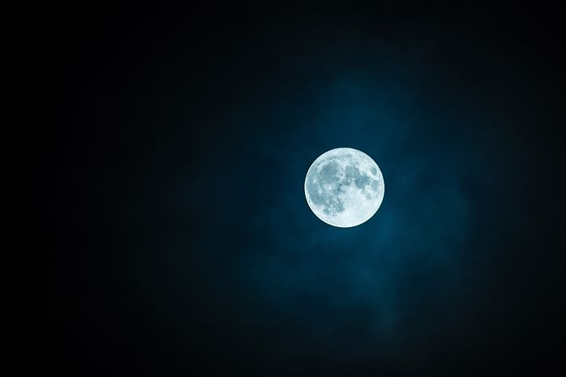

The moon is the prettiest creature in the world.
Look up at the moon and you’ll probably see a yellowish or white disk, pockmarked by darker structures. But despite this first-glance appearance, the moon isn’t exactly yellow nor bright white. It’s more of a dark grey, mixed in with some white, black, and even a bit of orange — and all this is caused by its geology.
The moon appears to shine because it reflects light from the Sun — it doesn’t actually produce any light of its own. It doesn’t even reflect that much light to begin with — just 3 to 12% of the sunlight that hits it gets reflected.
The Moon’s desolate beauty has been a source of fascination and curiosity throughout history and has inspired a rich cultural and symbolic tradition. In past civilizations the Moon was regarded as a deity, its dominion dramatically manifested in its rhythmic control over the tides and the cycle of female fertility. Ancient lore and legend tell of the power of the Moon to instill spells with magic, to transform humans into beasts, and to send people’s behaviour swaying perilously between sanity and lunacy. Poets and composers were invoking the Moon’s romantic charms and its darker side, and writers of fiction were conducting their readers on speculative lunar journeys long before Apollo astronauts, in orbit above the Moon, sent back photographs of the reality that human eyes were witnessing for the first time.